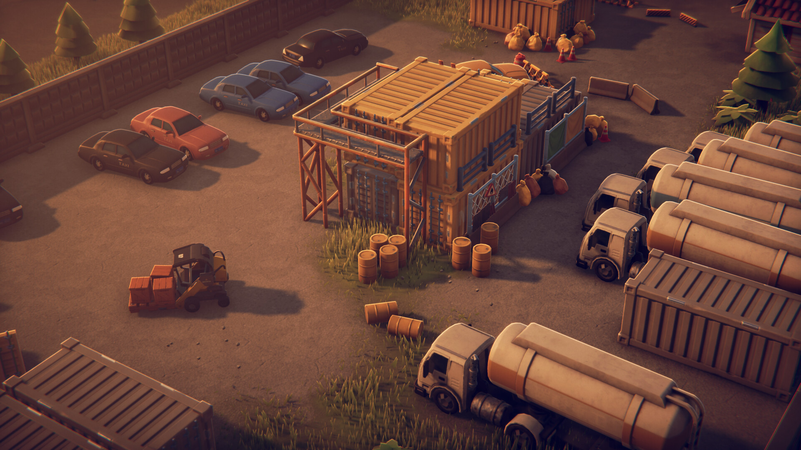

Nov 20, 2025
Update 1.4 "Gilded Seeds"
Escape From Duckov patch 1.4 adds the Seed Vault side quest, two new melee weapons, and improved AI pathing inside Neon Garrison. Extraction timers were extended by 60 seconds on Extreme+ to accommodate new boss routes.

Nov 12, 2025
Community Spotlight: Halloween Loot Run
Players collected toy bells, coin swords, and candy guns in record time. Our gallery features the fastest routes and hideout decorations.
Oct 30, 2025
Workshop Refresh
Ten new Escape From Duckov mods qualified as “Stable,” including Show Item Quantity and Better Key Indicator. See the mods page for load order recommendations.
Oct 16, 2025
Official Release Recap
Escape From Duckov launched on Steam with 96% positive reviews. Our release-day article collects beginner FAQs and system requirements.